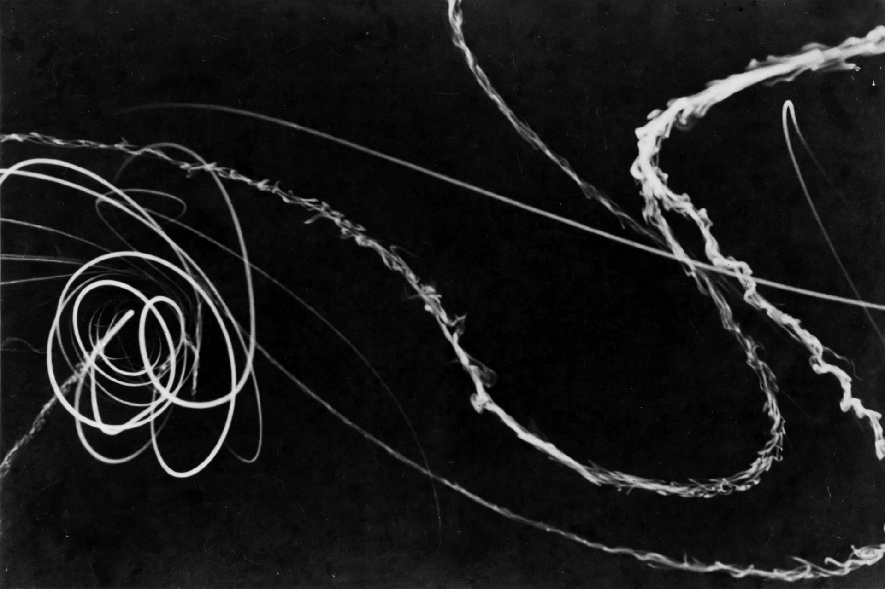

Cloud chamber

[Image: Historical photograph of cosmic-ray tracks in a cloud chamber, curved white trails on black]A cloud chamber (or Wilson chamber) is a particle detector in which ionising radiation reveals its path as a trail of condensation droplets in a supersaturated vapour. Invented by Scottish physicist Charles Thomson Rees Wilson (experiments from 1895; perfected 1911–12; Nobel Prize 1927), it was the instrument of particle physics' first golden age.
In a magnetic field, curved tracks give a particle's momentum and charge sign; density of droplets indicates ionisation. Carl Anderson discovered the Positron (1932) and the muon (1936, with Seth Neddermeyer) in cloud chambers; Patrick Blackett's chamber photographs of nuclear reactions won the 1948 Nobel. Superseded for research by the Bubble chamber (1952) and then electronic detectors, cloud chambers remain unmatched as teaching demonstrations — cosmic rays and natural radioactivity draw their white contrails in classrooms today (diffusion chambers work continuously with dry ice).
How it works
Alcohol or water vapour, cooled until supersaturated, condenses preferentially on ions; a passing charged particle leaves a line of ions, and droplets grow along it into a visible track within milliseconds. Photographing the tracks stereoscopically, physicists of the 1930s read new particles off the plates — the era when a new fundamental particle could be found by eye.